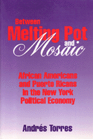

A political-economic reassessment of New York's African American and Puerto Rican communities
A political-economic reassessment of New York's African American and Puerto Rican communities


 A political-economic reassessment of New York's African American and Puerto Rican communities
A political-economic reassessment of New York's African American and Puerto Rican communities

|  |
Between Melting Pot and MosaicAfrican American and Puerto Ricans in the New York Political EconomyAndr�s Torrespaper EAN: 978-1-56639-280-8 (ISBN: 1-56639-280-2) |
"Torres' book is an important and unique contribution to the study of race relations in the United States. There is relatively little written on the subject and this stands out as a breakthrough work. His comparative analysis of two similarly situated non-white groups—African Americans and Puerto Ricans—is innovative and his synthesis of political and economic approaches is imaginative and quite fruitful."
—Angelo Falcon, President and Founder, Institute for Puerto Rican Policy, New York
Probing the nature and causes of continuing poverty and inequality among New York City's two largest minorities—African Americans and Puerto Ricans—Andr�s Torres explores their struggles for economic and political survival through phases of exclusion, insurgency, and backlash. From post-World War II New York through the global New York of the 1990s, Torres analyzes the groups' respective evolutions within U.S. history; their incorporation into the nation's and the city's economies; and their strategies for political action, socioeconomic mobility, and community infrastructure. His innovative examination illuminates the deeper sources for inequality in all urban cities in the United States.
Excerpt available at www.temple.edu/tempress
"By challenging the conventional neglect of the role of African Americans and Puerto Ricans in the New York labor market, Torres sheds new light on the complex and sometimes troubled relationship between two native minority groups."
—David Bensman, Department of Labor Relations, Rutgers University
List of Tables
Acknowledgments
Introduction
1. Class, Race, and the Reproduction of Inequality
2. The Regional and Urban Context: 1945-1990
3. African Americans and Puerto Ricans in New York
4. Patterns of Labor Market Mobility and Wages
5. Native Minorities, Immigrant Minorities
6. Politics and Culture in the New New York: An Expanding Foundation
7. Policy Wars 2000
Conclusion
Appendixes
Notes
Bibliography
Index
Andr�s Torres is Associate Professor and Director of the Center for Labor Research at the University of Massachusetts, Boston.
Political Science and Public Policy
Race and Ethnicity
Labor Studies and Work
© 2015 Temple University. All Rights Reserved. This page: http://www.temple.edu/tempress/titles/1124_reg.html.